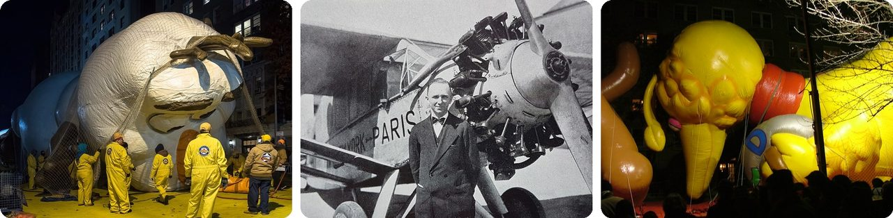
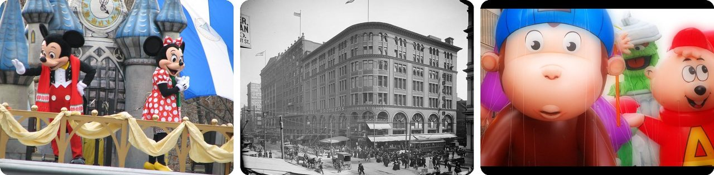
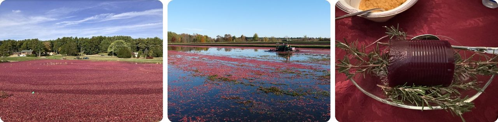

🌍 Top 10 Hidden History of Thanksgiving and Holiday Shopping
Nov 23, 2026
1. 🎭 Thanksgiving used to be trick-or-treat day
 From about 1870 until the 1930s, kids in New York City had a Thanksgiving custom called Ragamuffin Day. They dressed up as beggars in ragged clothes and went around asking grown-ups for treats and pennies.
From about 1870 until the 1930s, kids in New York City had a Thanksgiving custom called Ragamuffin Day. They dressed up as beggars in ragged clothes and went around asking grown-ups for treats and pennies.
Over the years the outfits got wilder, and kids started wearing all kinds of costumes, not just rags. Old glass-plate photos of these "Thanksgiving Maskers" show kids in masks and big hats scrambling in the street for tossed coins.
Then people got fed up with the begging. In the 1930s the asking-for-stuff part was dropped, and by the 1950s the whole custom was gone. Asking strangers for candy in costume ended up on Halloween instead.
So the costume-and-candy holiday used to come with gravy.
2. 📅 In 1939, Texas had two Thanksgivings
 In 1939, November had five Thursdays, so the usual "last Thursday" Thanksgiving fell on November 30. Store owners worried: that left only 24 shopping days before Christmas. The head of a big department-store company asked President Franklin Roosevelt to move it up a week.
In 1939, November had five Thursdays, so the usual "last Thursday" Thanksgiving fell on November 30. Store owners worried: that left only 24 shopping days before Christmas. The head of a big department-store company asked President Franklin Roosevelt to move it up a week.
Roosevelt did, to November 23 (87 years ago today). But each state picks its own holidays, so the country split: 23 states went with the new date, 22 kept the old one, and Colorado, Mississippi and Texas took both days off. The mayor of Atlantic City mocked it as "Franksgiving," and 62% of Americans didn't like the change.
And here's the twist: a 1941 government survey found the extra week didn't really boost sales. That same year, Congress fixed Thanksgiving on the fourth Thursday, where it still is.
Basically, a president moved a holiday for shoppers, and the shoppers didn't show up.
3. 🚓 "Black Friday" started as a Philadelphia police complaint
 The first known use of "Black Friday" for the day after Thanksgiving was in a 1951 factory magazine. It meant workers who called in "sick" that day to stretch the holiday into four days off.
The first known use of "Black Friday" for the day after Thanksgiving was in a 1951 factory magazine. It meant workers who called in "sick" that day to stretch the holiday into four days off.
Around the same time, Philadelphia police started calling it Black Friday because of the awful traffic and crowds of shoppers downtown. In 1961, the city tried a friendlier name, "Big Friday," but nobody used it. As late as 1985, stores in Cincinnati and Los Angeles still hadn't heard the term.
The cheerful story you usually hear, that it's the day stores finally go from "in the red" (losing money) to "in the black" (making money), came later. It first shows up in print in 1981, when stores wanted a nicer reason for the gloomy name.
In other words, the name came from grumpy cops, and the happy explanation was added afterward.
4. 🎈 Macy's once let its parade balloons fly away, with a cash reward

In 1928, Macy's started filling its parade balloons with helium instead of plain air, so they floated. After the parade, the balloon designer simply let five of them go. They were made to leak slowly and come down about a week later, and whoever found one got $100, around $1,880 in today's money.It turned into a sky treasure hunt. In 1931, a famous pilot, Clarence Chamberlin, spotted a dragon balloon in midair, chopped its head off with his plane's wingtip, and flew the pieces back for a $25 prize. A blue hippo balloon drifted off past the Empire State Building and was never found.
Macy's stopped releasing balloons in 1932, after a beginner pilot trying the same trick nearly crashed her plane.
Think of it as a message in a bottle, but the size of a house.
5. 🚒 America's oldest Thanksgiving parade isn't Macy's

The oldest Thanksgiving parade in the US is in Philadelphia. It started in 1920, four years before Macy's, and was put on by Gimbels, a big department store that wanted every holiday shopper headed to its toy floor.More than 50 store workers marched in costume down Market Street. At the end, Santa arrived at the store and climbed a fire department ladder truck all the way up to the toy department on the eighth floor.
Gimbels ran the parade until the store closed for good in 1986. The parade kept going without it, and it's still held every Thanksgiving.
So the first big Thanksgiving parade was really a fancy way of saying "come shop on our toy floor."
6. 🏃 A Thanksgiving turkey trot is older than the Boston Marathon
 Buffalo, New York, has held a Thanksgiving race called the Turkey Trot every year since 1896. That makes it about five months older than the Boston Marathon. It runs about 5 miles (8 km) down Delaware Avenue.
Buffalo, New York, has held a Thanksgiving race called the Turkey Trot every year since 1896. That makes it about five months older than the Boston Marathon. It runs about 5 miles (8 km) down Delaware Avenue.
The first race had just six runners on a dirt road, and only four finished. In 1899 there was a cheating scandal: a Buffalo runner rode part of the course in a wagon, so his team lost to the team from Rochester.
It has never been canceled for weather, even in Buffalo's huge snowstorms. In 2000, the city cleared snow off the race route first so the trot could go on. By 2011 it had room for 13,200 runners.
Basically, it's a holiday jog with a 130-year streak.
7. 🍒 In 1959, a scare nearly wiped cranberries off the table

On November 9, 1959, a few weeks before Thanksgiving, a US government official announced that some cranberries had tested positive for a weed killer that might cause cancer. He told shoppers not to buy cranberries if they couldn't tell where they were grown.Panic followed. Some cities and states banned cranberry sales, many grocery stores pulled them, and sales of fresh cranberries dropped by 73%. Newspapers suggested swapping in pickled watermelon rind instead. Even President Eisenhower's Thanksgiving dinner used applesauce in place of cranberry sauce.
The real danger was tiny: you'd have needed to eat thousands of pounds of the bad berries to match the dose that hurt lab rats. Cranberry growers called the day of the announcement "Black Monday."
In other words, cranberries had their own Black Monday decades before Cyber Monday.
8. 🥫 Green bean casserole was invented to sell soup
 In 1955, Dorcas Reilly worked in the test kitchen at Campbell's Soup in Camden, New Jersey. Her job was to invent recipes that used Campbell's soups. For a newspaper story, she needed a quick dish made from things most homes already had.
In 1955, Dorcas Reilly worked in the test kitchen at Campbell's Soup in Camden, New Jersey. Her job was to invent recipes that used Campbell's soups. For a newspaper story, she needed a quick dish made from things most homes already had.
She mixed green beans, cream of mushroom soup and crunchy fried onions. It didn't impress people at the company at first, but she kept pushing for it. It was printed on soup cans as "Green Bean Bake," and by the 1960s it had become a Thanksgiving regular.
Campbell's says about 40% of its cream of mushroom soup now goes into this dish, and it shows up at about 20 million Thanksgiving dinners a year. In Minnesota, that soup was used in so many casseroles that people nicknamed it "Lutheran binder."
Think of it as an ad you can eat.
9. 📺 The very first TV dinner was a Thanksgiving dinner
 In 1953, the Swanson company sold its first frozen "TV Dinner," and the menu was Thanksgiving: turkey, cornbread stuffing, peas and sweet potatoes. Each food sat in its own section of an aluminum tray, like the ones used for airline meals.
In 1953, the Swanson company sold its first frozen "TV Dinner," and the menu was Thanksgiving: turkey, cornbread stuffing, peas and sweet potatoes. Each food sat in its own section of an aluminum tray, like the ones used for airline meals.
You heated the whole tray in the oven for 25 minutes and ate right out of it in front of the TV. It cost 98 cents. The first batch was 5,000 dinners, and one year later Swanson had sold more than 10 million.
And here's the twist: the famous story says it was invented to use up a huge pile of unsold Thanksgiving turkeys. That story came from a Swanson manager in 1996, and members of the Swanson family and former workers say it isn't true.
A whole Thanksgiving feast that fits on your lap.
10. 💻 Cyber Monday was named for shopping at work
 The name "Cyber Monday" first appeared in a press release on November 28, 2005, from the National Retail Federation, a big group of US stores. It wasn't a huge shopping day yet: back then it was only around the 12th-biggest online shopping day of the year.
The name "Cyber Monday" first appeared in a press release on November 28, 2005, from the National Retail Federation, a big group of US stores. It wasn't a huge shopping day yet: back then it was only around the 12th-biggest online shopping day of the year.
The New York Times explained the idea: after a long weekend of looking at stuff in stores, millions of workers came back to fast internet at the office on Monday and bought what they liked.
Someone tried an online holiday before it, too: in 2003 a worker at a flower website suggested "White Wednesday," the day before Thanksgiving. It never caught on. Cyber Monday did, and in 2020 it became the biggest online shopping day in US history at the time, at $10.7 billion.
It's the holiday version of sneaking a game in during class.
Fun fact
Department stores have been inventing holiday traditions for a long time. Peoria, Illinois, has held a Santa Claus Parade on the day after Thanksgiving every year since 1887, started by a local department store, Schipper & Block. That's 33 years before Gimbels' parade, and decades before anyone called that day Black Friday. The big old downtown department stores, with their toy floors, parades and store Santas, are a whole world to explore next.
Photo credits (Wikimedia Commons)
- #1: Thanksgiving Maskers LCCN2014689992.jpg by Bain News Service, publisher, Public domain
- #1: Thanksgiving Maskers scramble for pennies LCCN2014689988.jpg by Bain News Service, publisher, Public domain
- #1: Thanksgiving Maskers LCCN2014689993.jpg by Bain News Service, publisher, Public domain
- #2: President Franklin D. Roosevelt Carving the Thanksgiving Turkey - DPLA - a8d0c1276a8b1ab3fe7f230e75415f33.jpg by The National Archives. Office of the Archivist of the United States. Franklin D. Roosevelt Library. (6/30/1941 - 1949), Public domain
- #2: President Franklin D. Roosevelt addresses joint session of Congress, September 21, 1939.jpg by Associated Press, Public domain
- #2: Franklin and Eleanor Roosevelt FDR library cornerstone 1939.jpg by Acme Newspictures, Public domain
- #3: Black Friday at the Apple Store on Fifth Avenue, New York City, 2011.jpg by JoeInQueens from Queens, USA, CC BY 2.0
- #3: US-RETAIL-BLACK FRIDAY (flickr) by Diario Critico Venezuela, CC BY 2.0
- #3: Black Friday Sale Inflatable (22729837503).jpg by Rusty Clark - On the Air M-F 8am-noon from merritt usland FLA, CC BY 2.0
- #4: Macy's parade balloon inflation (11678).jpg by Rhododendrites, CC BY-SA 4.0
- #4: Clarence Chamberlin.jpg by Unknown authorUnknown author, Public domain
- #4: Macy's Parade Balloon (flickr) by Me in ME, CC BY 2.0
- #5: Mickey and Minnie Mouse at the Philadelphia Thanksgiving Day Parade (flickr) by chrisinphilly5448, CC BY-SA 2.0
- #5: Gimbels LOC4a18217v (cropped).jpg by Unknown authorUnknown author, Public domain
- #5: Curious George, Alvin and Oscar (flickr) by digitalART2, CC BY 2.0
- #6: Turkey Trot.jpg by BowenLarsen, CC BY-SA 4.0
- #6: Runners sprint to the finish line at the Turkey Trot (8769025).jpg by U.S. Army 105MPAD by Pfc. Kyle Kimble, Public domain
- #6: Snow over Delaware Avenue, Buffalo, New York - 20200207.jpg by Andre Carrotflower, CC BY-SA 4.0
- #7: Cranberry harvest, Kingston Massachusetts.jpg by Mathcar, CC BY-SA 4.0
- #7: Harvesting cranberries in Cranmoor Wisc.jpg by Jeff the quiet, CC0
- #7: Canned cranberry sauce - November 2023 - Sarah Stierch.jpg by Missvain, CC BY 4.0
- #8: Green bean casserole.jpg by Rick Kimpel from Spring, TX, USA, CC BY-SA 2.0
- #8: green beans casserole (flickr) by bradleygee, CC BY 2.0
- #8: Green Bean Casserole (flickr) by arnold | inuyaki, CC BY 2.0
- #9: Swanson TV Dinner Swiss Steak box - DPLA - 033da20203975e46c6b8f595f3419a71 (page 1).jpg by Campbell Soup Company, CC BY 4.0
- #9: 1960 Swanson TV Dinner Advertisement Life Magazine December 5 1960 (flickr) by SenseiAlan, CC BY 2.0
- #9: Frozen-TV-dinner-top-view.jpg by Sir Beluga, CC0
- #10: Woman shops online with a small shopping cart and cash in a modern office setting during the afternoon.jpg by Shixart1985, CC BY 2.0
- #10: Black Friday and Cyber Monday sign at the Intertoys, Rotterdam (2018).jpg by Donald Trung Quoc Don (Chữ Hán: 徵國單) - Wikimedia Commons.(Want to use this image?), CC BY-SA 4.0
- #10: Mini shopping cart placed on a table next to a laptop in a modern office setting.jpg by Shixart1985, CC BY 2.0


.jpg){kind=link}
.jpg){kind=link}

.jpg){kind=link}

.jpg){kind=link}


.jpg){kind=link}


.jpg){kind=link}